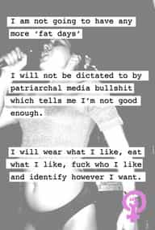

Sometime in the early winter season of 1995, Monica Lewinsky met Bill Clinton and had their first sexual encounter. Over the course of two years they had nine encounters that, allegedly, never amounted to sexual intercourse. Further, it was alleged she blew Clinton in the Oval Office, with some of his semen staining what would become her very famous blue dress. In 1996, she was moved from her post at the White House because it was perceived they were too close.
Kenneth Starr
Let’s go through the breaking of the story and his eventual impeachment trial. Linda Tripp, a coworker of Lewinsky’s, began to record her conversations with her in which Lewinsky recounted the sex acts and her relationship with the President. Eventually, these tapes were turned over to Kenneth Starr, an independent prosecutor.
Clinton had been previously sued by Paula Jones for sexual harassment. The suit was settled in late 1998, with a key element of that trial being his deposition in which he denied a sexual relationship with Lewinsky. While the allegations of sexual trysts between Clinton and Lewinsky didn’t surface until January 1998, it did not explode in the media until Kenneth Starr dropped the Starr report in early fall 1998, making strong, controversial allegations of the sexual relationship. When the allegations surfaced Bill Clinton famously drawled, “I did not have sexual relations with that woman.”
Clinton was served with articles of impeachment by the Republican House on December 19, 1998, with two counts – one of perjury (in the Paula Jones lawsuit) and one of obstruction of justice (same deposition, the allegation his testimony amounted to altering the course of justice because of his lies). It was a quick and highly political process. Democrats were minorities in both Houses, especially in the House. The House was crucial in this process, from a Constitutional perspective, as the allegations have to voted on by a majority of the members to move to the Senate, where impeachment accusations have to be voted for by 2/3 of the Senate.
From a political perspective, anti-Clinton animus was strong in the House, as even a few Democrats voted for impeachment. However, the Senate could not meet the 2/3 threshold, as every Democrat voted against impeachment, while a good number of Republicans did vote against it, as well. Understand that at the Senate level, it is treated as an actual trial. The Chief Supreme Court Justice presides over the proceedings, and House members preside as prosecutors. The accused have access to counsel, and the Senate as a whole serves as the jury, as they vote for or against the charges. After a private deliberation the House prosecutors failed to garner the necessary 67 votes, which would have led to Clinton’s impeachment and forcible removal from office.
Let’s talk about the feminist reaction. Understand that Clinton knew he had to appease feminists politically as the 1990’s had a strong feminist vibe to them. He appointed Janet Reno as Attorney General to placate feminists. Also, consider his marrying of Hillary. That could have been a calculated move by Clinton – a female with impressive credentials marrying an alpha male. Even in the past election, feminists praised Clinton for marrying Hillary – “proving intelligent and capable women can find love through who they are, not what they look like.”
In general, the feminist response was supportive. To be sure, it was muddled for some, but in order to support Clinton, they focused on Lewinsky. They complained loudly about the media depiction of her – her looks and weight were discussed and she was treated as dumb and entitled. Even one feminist proclaimed that when Starr released his report, she wondered whether the literary relationship between Starr and Lewinsky was consensual.
Feminists were upset Lewinsky was threatened with imprisonment for her actions and allegations. This was the sticking point – they were upset that a woman made a choice to sleep with a man and the choice could potentially blow up in her face. Which brings me to an article penned at Ms. Magazine that highlights the feminist response and the feminist relationship with alphas, hypergamy and their sexuality.
Susie Bright wrote aforementioned article in which she refers to Lewinsky as a “sexual superstar” for seducing the most powerful man in America. Notice the implicit admission of hypergamy – Bright never even considers her assumption powerful men are attractive. Second, is her assumption that Lewinsky seduced Clinton, like she is some sort of latter-day Cleopatra. There were pictures of Lewinsky staring adoringly at Clinton – yeah, a clinical narcissist falls for somebody? The evidence doesn’t even back the seduction up – Lewinsky was in photos clearly being the swooning person.
She then treats Lewinsky as a sexual blueprint to snag powerful men – if you want to bag powerful men, you must start packing on pounds. She even comments that if women start gaining weight, men will cry a sigh of relief, as they have always craved fat women – men have used thinness a weapon to oppress women. Finally, she discusses Lewinsky’s supposed brain. She claims Lewinsky is a genius and should have been groomed for great things – like being President.
When women sleep with a man, often times they pretend to have the traits he has. Lewinsky sleeps with a charismatic genius; she must be a charismatic genius as well. Women like to pretend they sleep with an equal; however, they know on some level they sleep with more powerful men. They are repulsed by inferiors and turned off by equals. However, in our society, women like to pretend they are equals to the men they bed. Part of this is the impetus for feminism – I can sleep with and marry lawyers, why can’t I be a lawyer? I must be smart enough because he has sex with me. He isn’t attracted to my looks; he is attracted to my brain. We must be equals then.
Bright concludes Lewinsky’s problem source from two reasons: patriarchy and her father’s decision to only pay for community college before university. The community college “issue” is bizarre and reeks of typical feminist privilege. Community college isn’t bad at all – in fact, if you are looking to avoid deleterious levels of student loan debt, community college is a great choice.
As for her second point, she claims Lewinsky had to seduce Clinton in order to climb the political ladder – she treats it as some sort of second-class citizenship situation where women have to sleep up the ladder to get there. She ignores the fact that men respect people who work hard and put their nose to the grindstone – she implicitly admits that women are more concerned with likeability than competency when promoting people. She also keeps pushing the point that Lewinsky seduced Clinton, but not just for lust but because she had to in order to climb the sexist patriarchy. She sees Lewinsky as sex icon, talking about how beautiful she is and how the nation will be reeling from Lewinsky’s beauty for decades.
This highlights the absolutely confused & bizarre response feminists took towards Bill Clinton & Monica Lewinsky. Susan Faludi, a very strong feminist, was quoted on the matter saying, “If anything, it sounds like she put the moves on him,” agreeing with Bright. Recall the feminist response to the sexual harassment allegations against Clarence Thomas by Anita Hill. Feminists were uniformly behind Anita Hill. To be sure, Clarence Thomas is black & Bill Clinton is white, so you can’t ignore racism. However, there is a huge, qualitative difference between feminist responses to both allegations of sexual harassment.
Let’s step through some evolutionary psychology before I go through feminist psychology around human sexuality. Matt Ridley penned the “The Red Queen” in 1993, at the height of feminist power in America. In his book he talks about how men and women are different because of different biological impetus’ based on different evolutionary needs of men and women.
He argues women have a biological conflict with the men they sexually desire. At the first level – lust – they desire powerful (alpha) males; however, they have desires of a second and third order related to companionship. In essence, they lust after alphas and then want beta male attention. Notice how when women are pregnant or rearing very young children they are very receptive to beta male advances. That is evolutionary – they are weak and need protection and provisioning. This can also play out with women seeking male commitment, then being open to advances of superior, more powerful males.
Many feminists were unable to resist Bill Clinton after the allegations of dalliances with Lewinsky surfaced. Feminist Erica Jong made comments she was glad her President was active sexually, commenting, “Imagine what it would be like to swallow the President’s cum!” Tina Brown commented on how much more charismatic & handsome he appeared after the scandal. Many other feminists talked about his sexual appeal, his physical appeal and most assuredly approved of him sexually.
This wasn’t the only feminist response to his dalliances. A few were disgusted with the unabashed expression of female sexuality of their sisters. They claimed to focus on the constellation of allegations against Clinton related to his sexual indiscretions. This is where the feminist consternation was concentrated. However, the real focus was most likely the uncomfortable relationship feminists have with sexuality.
Let’s have a discussion about the feminist psychology with respects to alpha males – the men, like all women, they are sexually attracted to. First, America is a society founded on puritanical values. This is reflected in the feminist reaction to sexuality in general. American society is not generally supportive of a positive sexuality for either sex. To be sure, the reigns have been loosened socially, but the underlying discomfit still persists. Further, American society is also a society steeped in narcissism – in other words, it often is very self-absorbed. Both of these issues are obvious when feminists are faced with their sexuality & the implications.
Puritanically, there are two processes, both based in fear, that a feminist can go through psychologically in order to balance feminism & female sexuality. Either a feminist can purely deny her sexuality: I am afraid of my sexuality, I perceive that society & authority figures do not approve of my sexuality, I don’t want to lose their approval, therefore I will not express my sexuality. The other process is projecting their base desires onto men. Many radical feminists have some crazy thoughts about what men think about sex and women – far too specific to be anything more than psychological projection. Otherwise, she can blame the patriarchy for inculcating bad thoughts in a male – usually centered around expressions of sexuality outside of what they think sexuality should be. Turn off the lights and only missionary.
However, let’s talk about the feminist psyche around alpha males & beta males. Here is a quote from a previous article I wrote on RVF:
As usual, the guys would abuse women will do so with impunity – they often have anti-social tendencies so they don’t care about what the social mores are. For guys that would not beat their girlfriends or wives all it does it create unnecessary fear on their part. It is beyond predictable that women target their psychological equal – the insecure beta male. Unable to control the men they desire – alphas – they double down on asserting supreme control over beta males. It is never satisfying for them.
Women are torn. The competition for status in their hierarchies bleed over to their competition for alpha males in two ways. They falsely assume the need to demonstrate social superiority in their approach. Sure, some men prefer higher-status women – that is true. However, social status does not nearly have the same effect on men as it does on women. Women, by and large, are supremely unhappy with the beta males they end up settling with. This reality usually turns into narcissism.

Feminists are not comfortable with male sexuality because, by and large, they do not have the ability to get the men they desire and the betas they get are unappealing. Affairs like Clinton & Lewinsky are appealing because they get to pretend alpha men like Clinton prefer chubby women like Lewinsky. The narcissistic exposure here is the delusion that reality reflects their belief that unattractive women, like Lewinsky, can get & keep the attention of a man like Clinton. Further, feminists don’t understand what men want because of this narcissism – they cannot understand any sexual desires that they don’t value in the same way.
This feeds into the feminist assumption that men & women want similar things sexually. This assumption causes many issues when feminists consider male sexuality. Men and women don’t want the same things sexually. Women desire to test for dominance in a way men don’t; women value intelligence, confidence & wealth in ways men don’t. Anti-fat shaming and beliefs that beauty standards are socially constructed feed into this narcissism. Feminists engage in these deconstructions because they don’t matter as much to women, however there is a more important reason. They seek to deny male sexuality while trying to alter sexual standards so they rise to the top of the sexual hierarchy. Not only that, but they want their expressions of sexuality to reflect on who they see themselves as a person.
Remember Susie Bright? She portrayed Lewinsky as a seducer of Clinton. She repackaged his alphaness as her seduction of him. They want to be the best – Bright considered Lewinsky as Presidential material. However, women are attracted to the best – money, power and influence. Again, this is where narcissism comes in. They substitute actual greatness – Clinton’s life – with brushing against that greatness. They get to live out their fantasies of power and influence by coming into contact with it. However, they really don’t want that power, just want the illusion of it; they don’t want their fantasies comprised by reality.
In reality, Clinton moved on and, recently, gave a rousing speech at the 2012 DNC. As for Lewinsky, she still is deeply in love with Clinton. She is now over 40, no kids and very much overweight. Like Roissy once said, five minutes of alpha is worth more than five years of beta. This case proves it. She allegedly only blew him nine times, but that was more than enough for lifelong love. She will spend the rest of her days recounting her days with Slick Willy. Like that one woman who released a book on her days with JFK – just days – remember that alpha males will always win. Women will always defend alphas – many feminists here proved that. They decided to defend Lewinsky, but they were implicitly defending Clinton while talking about how sexy Clinton was.
Never doubt the sheer power of the alpha male.
Read Next: How Feminist Censorship Introduced Me To The Red Pill